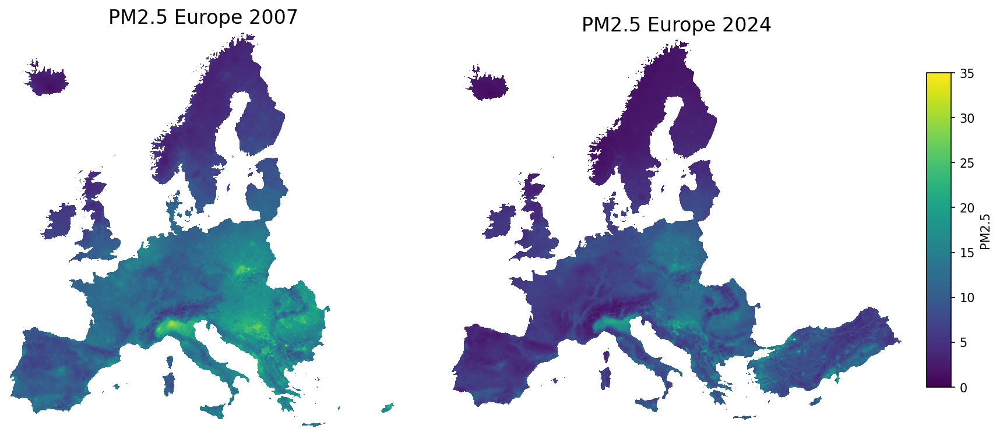
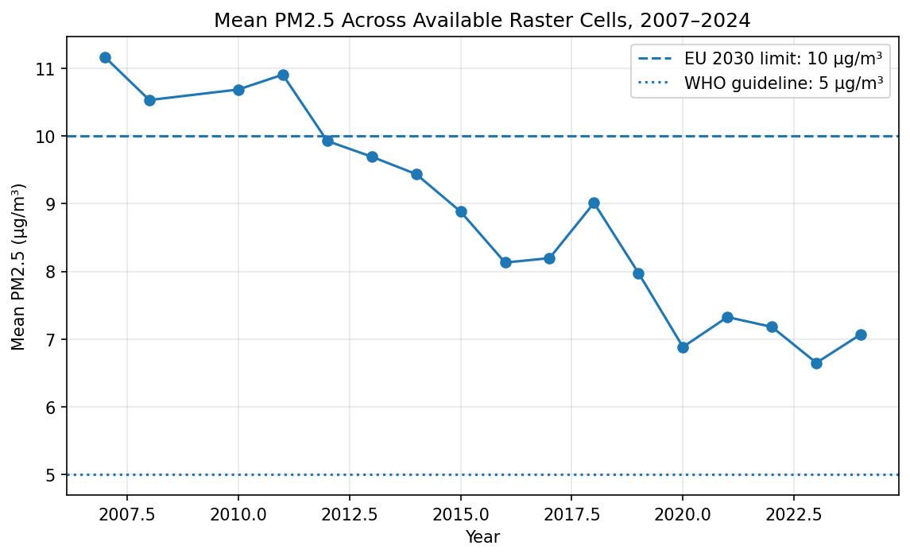
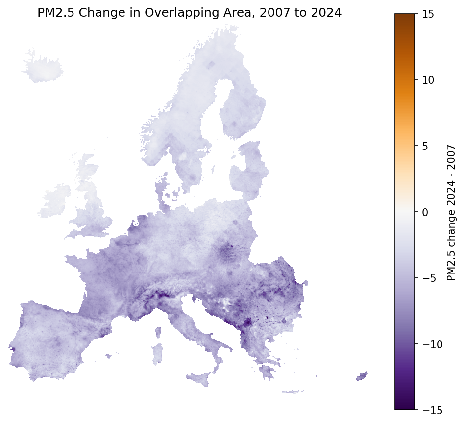
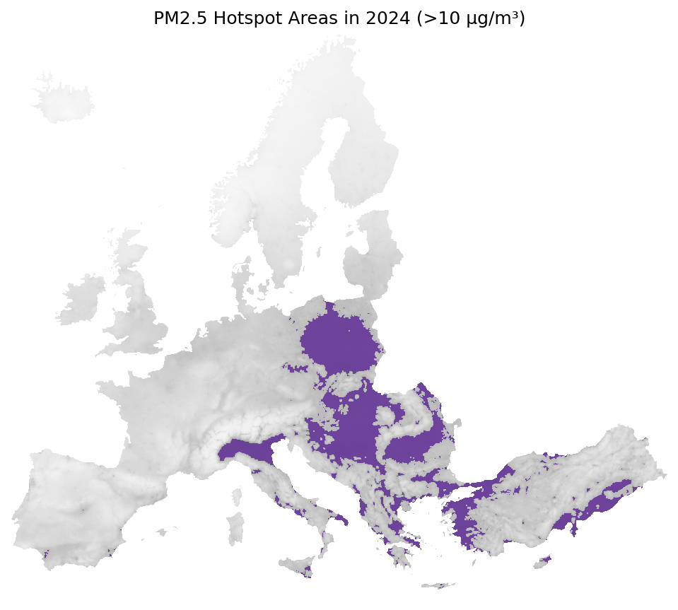
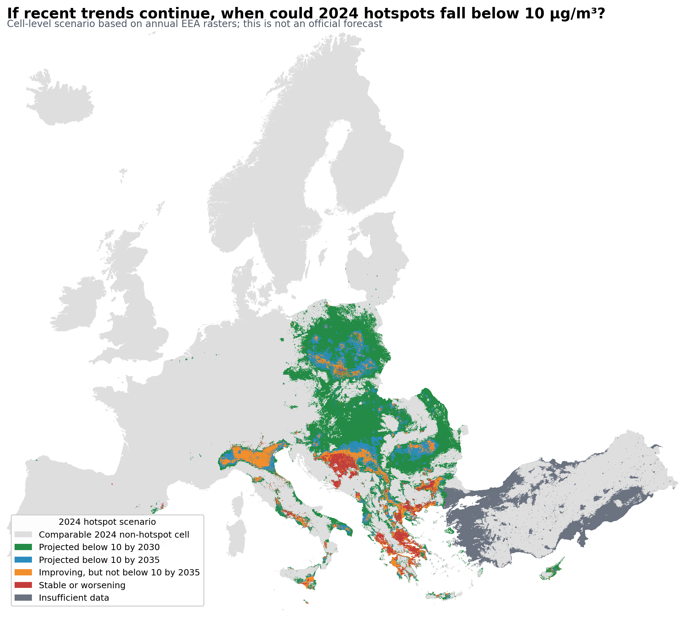
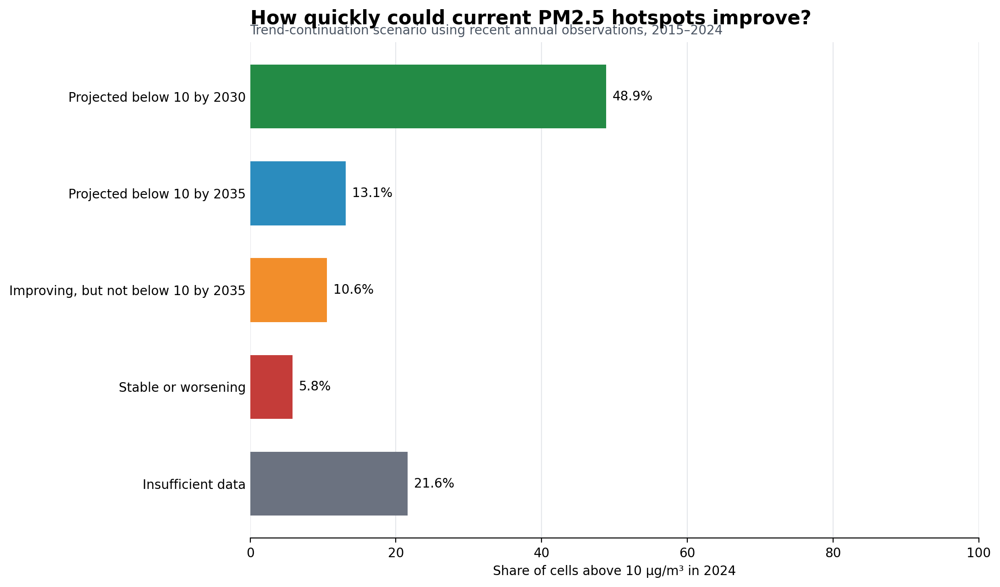
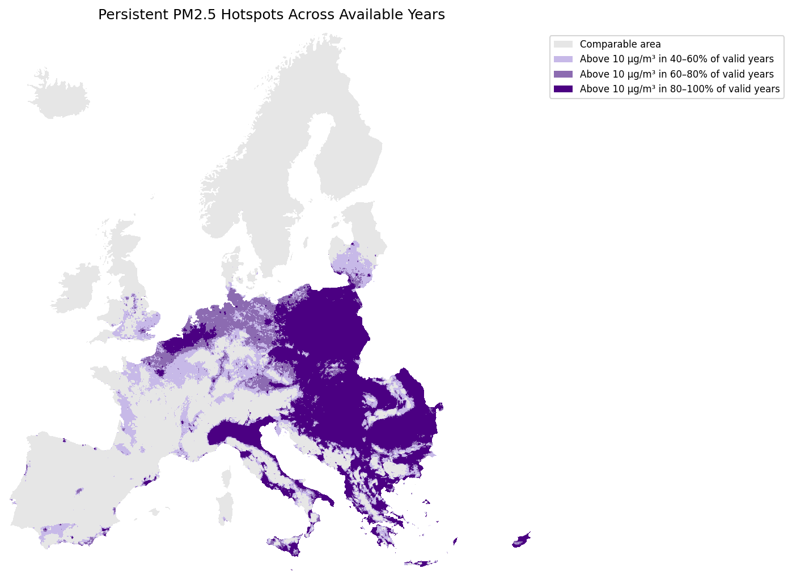

Measure the air
Official stations sample ambient air and report PM2.5 concentration in µg/m³.
European PM2.5 raster data, 2007-2024
Annual EEA raster maps show lower fine-particle pollution across much of Europe since 2007, while several regions still stand out in 2024.
Start the storyHow the maps are made
PM2.5 is measured at monitoring stations, but stations only cover specific locations. The EEA combines quality-controlled observations with modelling and spatial interpolation to create the 1 km raster maps analysed in this story.
Official stations sample ambient air and report PM2.5 concentration in µg/m³.
Measurements are quality-controlled and summarized into annual observations.
The EEA combines observations with modelling and spatial interpolation to estimate values between monitoring locations.
This project analyses the resulting annual 1 km raster maps to compare years and identify remaining hotspots.
Source: European Environment Agency (EEA).
Now that we know how the map is created, we can ask what it shows—and why particles this small matter.
01 / What readers need to know
PM2.5 is fine particulate matter smaller than 2.5 micrometers, small enough to travel deep into the lungs and enter the bloodstream.
The World Health Organization treats particulate matter as a key indicator of air pollution because exposure is linked to cardiovascular and respiratory disease. This story follows PM2.5 because it makes Europe's air-quality progress visible at a regional scale.
PM2.5 particles are much smaller than visible dust, so maps are often the first way readers can see the pattern.
Health agencies link fine-particle exposure to heart and lung disease, especially over long periods.
The hotspot maps use 10 ug/m3, the stricter annual PM2.5 limit planned under updated EU air-quality rules.
02 / Before the maps
Fine-particle pollution is not one single source. It can come directly from combustion and can also form in the air from other pollutants.
The baseline
Before looking at change, we first need to understand the starting point.
PM2.5 concentrations in 2007 were generally much higher than today, but pollution was not evenly distributed. Higher concentrations formed distinct belts across parts of Central, Southern and Southeast Europe, while northern areas were comparatively lower.
These patterns provide the baseline for everything that follows.
The central question
The side-by-side view compares the beginning and end of the available series. Across much of Europe, the 2024 map shows lower annual PM2.5 concentrations than the 2007 baseline.
The continental pattern became cleaner overall, but improvement did not occur at the same pace everywhere.

Europe's broad PM2.5 pattern became cleaner between 2007 and 2024.
The largest visual reductions appear across substantial parts of Central and Western Europe.
Northern Italy, Southern Poland and parts of Southeast Europe remain visually important in 2024.
Yes overall—but the improvement was not spatially even.
From change to cause
Cleaner technology, emission controls and European air-quality rules helped reduce PM2.5 over the last two decades.
These long-term improvements are visible in the PM2.5 maps shown earlier, demonstrating how environmental policy and cleaner technology can produce measurable changes over time.
Sources: European Environment Agency, emissions of the main air pollutants; European Commission, ambient air-quality data and reporting.

The evidence behind the animation
The transition map gives a spatial impression. The yearly mean chart checks that impression against the full set of available annual rasters, showing a broad decline in raster-cell means.
2007
11.17ug/m3 cleaned raster-cell mean.
2024
7.07ug/m3 cleaned raster-cell mean.
Caution
CellRaster-cell means, not population-weighted exposure.
The complication
The 2007 and 2024 rasters do not cover exactly the same area. To avoid a misleading comparison, this map compares only cells that are valid in both years.
Read this map as the geography of improvement: blue areas improved more strongly, while neutral or warmer areas improved less or increased.


The remaining problem
Many areas were cleaner in 2024 than in 2007. Yet some still exceeded the 10 ug/m3 threshold used in this story.
Regional pollution patterns reflect a combination of emissions and conditions that affect how particulate pollution forms, disperses and accumulates.
Dense population, industry and transport combine with meteorological and geographical conditions that favour the accumulation of air pollutants.
Household solid-fuel heating, industry and transport contribute to elevated particulate pollution.
Solid-fuel heating and industrial emissions remain important sources of particulate matter in several central and eastern European regions.
Agricultural ammonia can react with other pollutants in the atmosphere and contribute to the formation of PM2.5.
Wind, temperature inversions, valleys and limited atmospheric mixing influence whether pollution disperses or accumulates.
These are established regional drivers of particulate pollution; this project does not estimate the causal contribution of each source.
Sources: European Environment Agency, Air quality status report: PM2.5, Managing air quality in Europe, and the Poland country profile.
A trend-continuation scenario.
This project asks a simple question: if the recent rate of improvement continues, which current hotspot areas could fall below the EU policy threshold over the next decade?
A trend-continuation scenario extends the observed 2015–2024 direction of change for each sufficiently observed hotspot cell. It shows where recent progress appears fast enough to cross 10 µg/m³—and where it does not.


Approximately half of today's hotspot cells would fall below the EU annual threshold by 2030 if recent trends continued.
Nearly two-thirds of today's hotspot cells would fall below the threshold by 2035, including those crossing by 2030.
A small but important share of today's hotspot cells show little improvement or slight worsening under the trend-continuation scenario.
Overview to zoom to details
The Europe-wide hotspot map is easier to understand when it zooms into named regions. Start with Northern Italy, then compare how other regions appear in the sampled 2024 layer.
Guided hotspot tour
Northern Italy / Po Valley

A longer memory
Persistence adds time back into the hotspot story. It asks whether areas above the threshold in the mapped period were repeatedly high across available years, rather than appearing only once.
This layer should be read carefully: it is based on project raster-cell counting, not an official EEA persistence statistic.
Final chapter
After the guided story, readers can use the explorer to change views, inspect sampled values and test the main claim themselves: broad improvement, uneven remaining hotspots.
Methods and limits
The analysis uses annual EEA PM2.5 raster datasets from 2007 to 2024. The story is built from raster-cell calculations and sampled browser layers, so it shows spatial concentration patterns but should not be read as population-weighted exposure.
Annual EEA PM2.5 GeoTIFF rasters, with 2009 unavailable in the current dataset collection.
Exact 2007 to 2024 change uses overlapping valid raster cells because coverage differs across years.
The maps support a spatial story about concentration patterns, improvement and remaining hotspots, not individual exposure estimates.
Transparency and reproducibility
This interactive story combines official environmental data, reproducible analysis, and interactive visualization to explore how PM2.5 changed across Europe between 2007 and 2024.